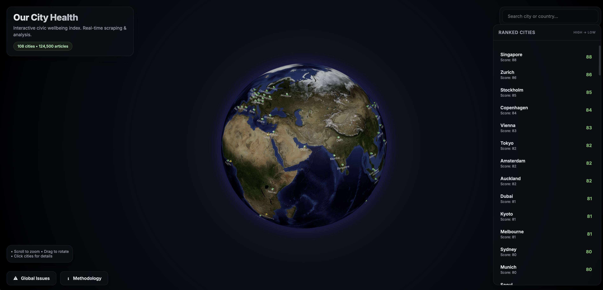
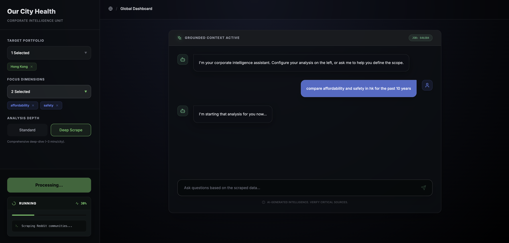
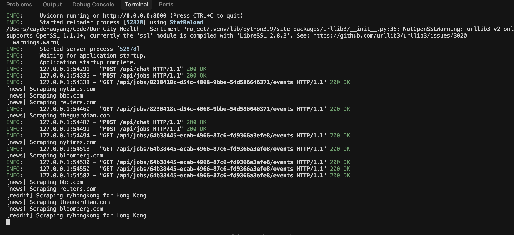

HKSTP Ideation Programme
The Operating System for Civic Intelligence.
"Turning the noise of the city into a precise, real-time credit score."
Section A
Our City Health provides real-time civic intelligence for location-based decision-making — turning neighborhood sentiment into actionable risk metrics. Starting with Physical Asset Owners (Real Estate, Retail) and expanding to Scale Markets (Insurance, Government, Logistics, Corporate Security).
70%
of housing projects delayed by community opposition (NIMBYism)
$6-8M
cost per year of project delay in carry costs
$209K
monthly cost of a single bad retail location
Placer.ai tells you foot traffic is down 15%.
We tell you it's because "Safety Sentiment" dropped 20% due to aggressive panhandling — something crime stats missed.
Developers and retailers have mastered the Financial Stack (Argus, Excel) and the Physical Stack (CoStar, Placer.ai). But the Social Stack remains unmeasured and unquantified.
Existing tools measure Activity (foot traffic) or Amenities (cafe count). But no digital tool reliably captures Adversarial Sentiment or Entitlement Risk.
This gap forces teams to rely on manual town halls and gut feelings to predict if a community will block their project—a "1990s workflow" for billion-dollar decisions.
We fill this missing layer. By quantifying the "Social Stack" into a rigorous 'Civic Health Index', we measure the "software" of a city (trust, anger, political will) just as precisely as others measure the "hardware."
Predictive
Detect opposition before you bid
Semantic
AI reads "I feel unsafe" not just "Crime"
Auditable
Click any score to see the source
Standardized
Compare any city instantly
Section B
The Entitlement Cliff — A Multi-Million Dollar Blind Spot.
Developers and retailers spend millions on physical due diligence and financial modeling. Existing tools (CoStar, Placer.ai, Esri) provide demographics, traffic, and infrastructure data — but they don't measure community sentiment or opposition risk. Teams still rely on manual site walks and town hall meetings to assess whether a neighborhood will fight their project. This blind spot costs HK$6-8M per year of project delay.
Community opposition is the #1 killer of real estate and retail projects
70%
of housing developments delayed by NIMBYism
41%
of retail locations fail within 5 years
$6-8M
annual cost of carry for delayed projects
A developer buys land for $50M. They plan to build apartments. The local community hates it. They protest. They sue. The project gets delayed 3 years. The developer loses millions in carry costs. Yet their only tool for predicting this? Sending someone to a town hall meeting.
Placer.ai shows traffic is down 15%. But why? Is it safety? Parking? Gentrification anger? A boycott? GPS data can't tell you. We explain the "why."
Dataminr alerts you when the riot starts. But by then, the glass is already broken. Real estate is illiquid — you can't move your building. We detect the gas leak 6 months before the explosion.
Competitors like Dataminr are famous for sending alerts with no source citations. An Investment Committee won't approve a $100M deal on faith. We let them click the link and read the Reddit thread.
Supply chains and corporate travel teams rely on static risk reports. They miss the real-time sentiment shifts—like labor unrest or anti-foreign sentiment—that disrupt operations overnight. We detect "soft signals" before hard disruptions.
Developers and retailers have amazing tools for the hardware of a city (buildings, traffic, financials). They have terrible tools for the software (people, trust, community sentiment).
| Due Diligence Layer | What They Measure | Tools Used | Status |
|---|---|---|---|
| Physical Layer | Traffic, Buildings, Footfall, Zoning | Placer.ai, CoStar, SafeGraph | SOLVED |
| Financial Layer | Rents, Yields, Cap Rates, Tax | Argus, Excel, CoStar Comps | SOLVED |
| Demographic Layer | Income, Age, Education, Census | Esri/ArcGIS, Census Data | SOLVED |
| Social Layer | Community Sentiment, Trust, Opposition, "Vibe" | Site Walks, Town Halls, Gut Feel | BROKEN |
We don't replace Placer.ai or CoStar.
We are the "Social Layer" that completes their stack — digitizing the site walk and automating the town hall.
Section C
A Predictive Engine for Civic Intelligence.
We don't just show you what happened — we explain why it happened and predict what's coming next. Real-time scores + 5 years of historical data + AI-powered causal analysis.
Scalable infrastructure designed to ingest from 380,000+ sources across every major city
380,000+ Sources
Legacy tools search for words. We search for meaning. This is why we catch risks that keyword filters miss.
Traditional tools use Boolean keyword matching:
Problem: Misses posts like "I won't let my kids play outside anymore" or "The streetlights have been broken for months" — clear safety concerns without the keyword "crime."
Our LLM understands context and intent:
Advantage: Catches implicit sentiment, sarcasm, local slang, and complaints that don't use obvious keywords.
Competitors like Dataminr send alerts with no source citations — they protect their "IP." But an Investment Committee won't approve a $100M deal on faith.
Our Promise: Every score links back to the original source.
Example: "Safety Score dropped to 42 because of [15 Reddit threads about broken streetlights on 5th Ave]."
Your analyst can click the link and read the threads themselves.
Our data acquisition strategy prioritizes legal, licensed sources that scale to hundreds of thousands of feeds while maintaining full compliance.
Foundation Layer — Free to Low Cost
380,000+
sources
GDELT Project
300,000+ global news sources, 100+ languages
Free
NewsAPI
80,000+ sources with structured metadata
~HK$3,500/mo
Government Open Data
Municipal portals, World Bank, UN Data
Free
Licensed APIs — Moderate Cost
$1-5K/mo
estimated
Reddit Data API
Enterprise licensing for commercial use
~HK$1.87/1K calls
~HK$7,800/mo at scale
X/Twitter API
Basic to Pro tier access
$100-500/mo
Partnership Development — Phase 2
Partnerships
in negotiation
Regional forums (HKGolden, PTT, 2ch) and emerging market platforms require direct partnerships:
Total infrastructure cost: HK$3,900-15,600/mo for 380,000+ legally licensed sources
A comprehensive framework measuring the holistic health of any city — not just crime stats or GDP
Each dimension is individually selectable for deep-dive analysis across any city in the database
Crime, public order, emergency response
Affordability, availability, quality
Jobs, wages, business climate
Policy trust, transparency, services
Infrastructure, accessibility, reliability
Air quality, green space, sustainability
Healthcare access, public health
Arts, entertainment, diversity
Schools, universities, opportunity
Innovation, connectivity, digital services
Social cohesion, belonging, trust
Affordability vs. income levels
Selectable
Click any dimension to drill down with extensive data, trends, and cited sources
Comparable
Compare any dimension across unlimited cities worldwide — Tokyo vs. London vs. São Paulo
Always Current
Continuous scraping solves the Latency Tax — real-time data, not 2-year-old snapshots
Not just scores — explanations of why they changed and predictions of where they're heading. Historical context meets predictive intelligence.
Imagine opening a single interface and seeing not just the current health score of every city, but why it changed and where it's heading. Our AI doesn't just report "Safety dropped 8 points" — it explains: "Safety declined due to 340% increase in housing protest coverage, correlated with new rent control policy announced March 3rd."
With 5 years of historical data per city, you can see patterns that predict future shifts. Which cities recovered fastest after similar governance crises? What leading indicators preceded the last 3 economic sentiment drops in Singapore? The Corporate Dashboard transforms you from reactive decision-maker to predictive strategist.
Organize your cities into logical groupings that mirror your business structure.
Never miss a signal. Set custom thresholds and get notified before problems escalate.
Go beyond the score. Understand WHY it changed and WHAT'S NEXT.
Make apples-to-apples comparisons across any cities in the world.
PDF Reports
Audit-ready exports with full citations
CSV/Excel Export
Raw data for your own analysis
Interactive Charts
Embed live widgets in your tools
Scheduled Reports
Weekly/monthly automated briefings
Predictive intelligence on demand. Not just "what happened" — why it happened, what's coming, and what you should do about it.
Custom Reports answer the questions reactive data can't: "If Housing sentiment continues this trajectory, when will it cross our risk threshold?" or "Based on historical patterns, what's the 6-month outlook for Governance Trust in Jakarta?"
Our AI synthesizes 5 years of historical patterns with real-time signals to generate forecasts with confidence intervals. Each report explains the causal chain — not just "sentiment dropped," but exactly which policy changes, news events, and social conversations drove the shift, and what similar patterns have led to historically.
Predictive assessment: Is this city trending up or down?
• 12-month trajectory forecast with confidence intervals
• Causal analysis: What's driving current momentum?
• Historical pattern matching: Similar cities' outcomes
• Go/No-Go recommendation with timing guidance
Delivery: 15-20 page report + executive summary
Understand why it happened and when it will recover.
• Causal chain analysis: Exact events that triggered the crisis
• Historical comparison: How long did similar crises last?
• Recovery timeline forecast with milestones
• Early warning indicators: What to watch for next time
Delivery: 48-72 hour turnaround
Where will each city be in 12 months? Who's rising, who's falling?
• Trajectory forecasts for all compared cities
• Momentum analysis: Which cities are accelerating vs. stalling?
• Opportunity windows: Optimal timing for each market
• Strategic roadmap with prioritized recommendations
Delivery: 25-30 page strategic report
Scope Definition
Clarify questions & success criteria
Data Extraction
Pull relevant signals from our database
Analysis
Human + AI synthesis of findings
Validation
Fact-check all claims with citations
Delivery
Report + presentation + Q&A session
Every report includes full source citations, methodology documentation, and executive summary for audit compliance.
Organize unlimited cities into custom portfolios — 'GBA Assets', 'European Markets', 'Emerging Watchlist'. Compare regions at a glance.
Set automated alerts on any dimension (e.g., Alert if Housing < 50). Get notified before crises materialize.
5-year historical trends with full citations. Compare Tokyo vs. São Paulo vs. Lagos on any dimension.
Working prototype demonstrating proof-of-concept for key pipeline elements. Incomplete but functional.
City Coverage
100 cities operational — scalable to 1,000+
News Sources
Hundreds of outlets including wire services
Social Platforms
Reddit only — X, Weibo in Q1
Interface
3D globe + dashboard built
Public-facing visualization layer

What you're seeing: A WebGL-powered 3D globe displaying real-time Civic Health Index scores for 108 cities. Users can rotate, zoom, and click on any city to see detailed scores across all 12 dimensions.
Enterprise B2B interface (early prototype)

What you're seeing: Early prototype of the Corporate Intelligence Unit. Portfolio selection (Hong Kong), dimension filtering (affordability + safety), and a "Grounded Context" AI chat that answers questions using only scraped data — no hallucinations.
Backend data pipeline in action

What you're seeing: The FastAPI backend running live scraping jobs. The engine ingests from multiple news sources (NYTimes, BBC, Reuters, The Guardian, Bloomberg) and Reddit communities simultaneously, processing data for the selected city (Hong Kong).
Status: Core infrastructure validated. These POC elements demonstrate the technical feasibility. Ready for Q1 scaling push.
Section D
The "Social License" Gap — A Blue Ocean in Site Intelligence.
The "Security" market is saturated (Dataminr). The "Traffic" market is dominated (Placer.ai). But there is no dominant player providing Qualitative Civic Health Trends to the private sector. We bring standardized civic health metrics to commercial strategy teams — measuring neighborhood sentiment, community cohesion, and social stability that existing tools miss.
Security Market
Dataminr, Control Risks
Saturated
Traffic Market
Placer.ai, SafeGraph
Dominated
Social License Market
Civic health tools (gov/public sector only)
Open for Private Sector
Focused on the "Social Layer" gap in site selection, operational monitoring, and community risk assessment — a subset of the broader commercial intelligence market.
Total Addressable Market
Global Real Estate & Retail Analytics Market — includes all data/analytics tools used for site selection, risk assessment, and market intelligence (Placer.ai, CoStar, Local Logic, Esri, consultancies).
Serviceable Addressable Market
Alternative Data & Sentiment Analytics — subset of companies actively seeking qualitative insights (social sentiment, community data) beyond traditional demographic/financial data.
Serviceable Obtainable Market
Year 3 Revenue Target — mid-size developers and retailers expanding internationally (APAC, Europe, North America) who lack reliable civic intelligence on unfamiliar markets.
We are launching with industries where "Community Sentiment" is a multi-million dollar blind spot and existing tools have clear gaps. This focused go-to-market strategy allows us to prove product-market fit before expanding to additional verticals.
Pre-Bid Community Screening
The User
VP of Development, Land Acquisition Manager
The Pain
Buy land for $50M → community hates it → protests → lawsuits → 3-year delay → $6-8M in lost carry costs
Current Solution
Existing tools (CoStar, Esri) provide demographics and physical infrastructure but miss community sentiment. Developers still rely on manual site walks and town hall meetings to assess social opposition risk.
Our Value Proposition
Before bidding on land in a new district, run a "Civic Health Check" to quantify Entitlement Risk using real-time sentiment data. Identify if the neighborhood has:
Low Community Cohesion
Fragmented — protests likely
Low Governance Trust
Anti-development sentiment
High Housing Stress
Gentrification anger brewing
"Anti-Delay Insurance" — know if a community will fight your project before you buy the land.
Target Companies:
Mid-size developers expanding internationally, regional developers entering unfamiliar markets, overseas land acquisition teams
The "Vibe Check" for Expansion
The User
Head of Real Estate, Site Selection Committee
The Pain
Open store in trending-down neighborhood → $209K/month in lost sales → close after 18 months
Current Solution
Placer.ai shows foot traffic numbers but not "why" traffic is trending. Site selection teams still rely on manual site walks and anecdotal local interviews to assess neighborhood sentiment.
Our Value Proposition
Overlay our "Safety Sentiment & Cultural Vibrancy" scores on top of Placer.ai traffic data to explain trends and predict future performance:
Placer.ai says: "Traffic is high at this corner."
We add: "But 'Safety Sentiment' has dropped 15% in 6 months due to loitering complaints. Consider the mall 2 miles north instead."
Target Companies:
Regional QSR franchises expanding overseas, mid-size F&B chains entering new markets, CPG companies expanding international distribution
Parametric Risk Modeling
Use Case: If "Governance Trust" collapses in a zip code, riot risk goes up. Mid-sized domestic insurers need predictive civic signals but can't afford to build proprietary platforms.
Value: Parametric triggers based on real-time sentiment scores to adjust reserves and pricing.
Longer sales cycle, but validates deep tech credibility.
Policy Impact Measurement
Use Case: Real-time civic sentiment to understand policy effectiveness, identify emerging issues before escalation, and benchmark against peer cities.
Value: Continuous pulse checks vs. expensive annual surveys. Track trust and satisfaction scores in real-time.
Validates product legitimacy and creates public case studies.
Supply Chain & Duty of Care
Use Case: Static risk reports miss real-time labor unrest or anti-foreign sentiment that disrupt port operations and executive travel overnight.
Value: Live alerts for shipping hubs and travel destinations. Detect "soft signals" before hard disruptions.
Operations teams need daily intelligence, not quarterly reports.
Once core platform is validated with Physical Asset Owners and Operational Risk Teams, we will expand to: Quantitative trading firms (mid-size macro funds, municipal bond specialists). This is a crowded but addressable market once we have proven case studies and audit-ready data.
Local SMEs expanding overseas — we provide intelligence on unfamiliar markets
HK and GBA companies face massive information asymmetry when expanding internationally. While they know their home market intimately, they lack reliable civic intelligence on overseas destinations — especially in emerging markets and niche cities where data is scarce.
We fill that gap by providing standardized, real-time civic health data on smaller markets, second-tier cities, and regions that mainstream data providers don't cover well.
Our Value to HK/GBA Companies:
"You know Hong Kong. We tell you about everywhere else — especially the places where good data doesn't exist yet."
HK/GBA SMEs expanding globally are already in HKSTP's ecosystem — providing immediate, warm access to first customers.
Section E
We Don't Replace — We Complete.
Your customers already invest millions in specialized tools. We're not building a better alert system — we're building the "Context Layer" that every stack is missing.
| Feature | Our City Health | Dataminr | Placer.ai | GenAI Wrappers | Consultants |
|---|---|---|---|---|---|
| Output Type | Structured Database | Alerts | Traffic Data | Text Summary | PDF Report |
| Time Horizon | Real-Time + History | Real-Time | Real-Time | No Memory | Lagging (6mo) |
| Granularity | District Level | Incident Level | Store Level | City Level | City Level |
| Audit Ready | ✓ Citations | ✗ | ✓ | ✗ Hallucinates | ✓ |
| Insight Type | "Why" (Context) | "What" (Event) | "Where" (Movement) | "What" (Creative) | "Why" (Deep) |
Every tool optimizes for 1-2 dimensions. We're the only one that delivers all three.
⚡ Speed
How fresh is the data?
📊 Datapoints
How many sources/cities?
🔍 Context
Does it explain "why"?
Our City Health
Civic Intelligence
Real-time (hourly)
1,000+ cities, 380K sources
Full "why" + citations
GenAI Wrappers
Custom GPTs, Claude Projects
Instant response
Broad but shallow
Hallucinates, no citations
Alert Platforms
Dataminr, Placer.ai
Real-time alerts
Social + GPS data
"What/Where" not "why"
Consultancies
McKinsey, Deloitte
6-12 month lag
Deep but narrow
Full analysis
Every existing tool makes a trade-off. Fast tools sacrifice context. Deep tools arrive too late. We deliver all three: speed, comprehensive datapoints, and causal explanations.
Competitors measure the hardware of a city (amenities, traffic, infrastructure). We measure the software (trust, anger, political will).
Scenario: You are building a high-rise. Local Logic says the area is "Vibrant" (9/10 score) because it has 50 cafes.
Competitors say: "It's a lively, great neighborhood."
The Miss: They don't tell you the residents of this lively neighborhood are organizing a petition to block your tower.
Our Answer:
"Vibrancy is high, but 'Entitlement Risk' is critical. 40% of local sentiment is actively hostile to new density."
Scenario: Foot traffic drops 15%. Placer.ai shows the drop but not the cause.
Placer says: "People stopped coming."
The Miss: Is it weather? Construction? Or a 6-month trend of rising "Safety Anxiety" that crime stats missed?
Our Answer:
"Traffic is down because 'Safety Sentiment' dropped 20%, driven by specific complaints about street lighting and loitering."
"Placer counts the feet. We explain why they walked away."
| Question for the Developer | Placer.ai | Dataminr | Our City Health |
|---|---|---|---|
| "How many people are here?" | ✓ | ✗ | ✓ |
| "Did a disaster just happen?" | ✗ | ✓ | ✓ |
| "Is this neighborhood getting better or worse?" | ✗ | ✗ | ✓ Trendlines |
| "Why are tenants leaving?" | ✗ | ✗ | ✓ Sentiment |
| "Will the community oppose our project?" | ✗ | ✗ | ✓ Entitlement Risk |
Don't tell developers to cancel Placer.ai. Tell them Placer gives the Quant (Numbers), and we give the Qual (Context). They need both.
Unlike consumer data plays, civic intelligence requires navigating complex cross-border compliance — creating significant moats for early entrants.
Strict consent and data processing rules. Our aggregation-only model (no PII collection) ensures compliance while competitors struggle with individual-level tracking.
Cross-border data transfer restrictions. Our HK-based infrastructure enables GBA analysis while respecting mainland data sovereignty requirements.
PDPA (Singapore), APPI (Japan), LGPD (Brazil) — each market has unique rules. Early compliance investment creates 12-18 month head-start vs. new entrants.
Compliance complexity = competitive moat. We're building this foundation from Day 1.
Section F
A Scalable DaaS (Data-as-a-Service) Engine.
All prices in Hong Kong Dollars (HKD)
Try before you buy
Lead generation & validation
For SMEs & small teams
HK$12,000/yr billed annually
For growing teams
HK$24,000/yr billed annually
Custom deployments
Custom pricing & SLA
For quants & data providers
Hedge funds, quant teams
Unit Economics: Why These Margins Work
Data Infrastructure
HK$3,900-15,600/mo
GDELT (free) + NewsAPI (~HK$3,500) + Reddit API (~HK$7,800)
Compute / LLM Costs
Variable
Scales with usage; HKSTP compute support critical
Gross Margin Target
70-80%
Typical for SaaS data products at scale
From prototype to global platform
Section G
An AI-Native Founder with High Technical Velocity.
Architect & Founder
Expert in Agentic AI Workflows (Cursor + Google Antigravity). Capable of executing engineering tasks at 5x the speed of a traditional developer, keeping burn rate near zero.
Dedicated Gap Year (2026-2027). Will focus 100% full-time on scaling the venture post-graduation.
Developed the core 12-dimension taxonomy at the Civic AI Research Lab, validating the framework with academic rigor.
Section H
Strategic Alignment & Landing Plan.
Scoring 1,000+ cities daily requires GPU inference at scale. HKSTP's supercomputing support is critical.
HKSTP's network of HK & GBA companies expanding globally provides immediate warm introductions to first customers.
Navigating PIPL, GDPR, and 50+ jurisdictions requires HKSTP's legal expertise.
Access to HKSTP's enterprise data partnerships for licensed API access (Reddit, regional sources, government feeds).
Establish Hong Kong entity immediately upon acceptance.
Recruit 1 Business Development Lead and 1 Data Engineer using grant funds within 6 months.
Ready to Build the Global Standard.
The world's first real-time civic intelligence platform.
1,000+ cities. 380,000+ sources. 12 dimensions. One platform.